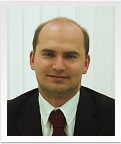
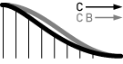
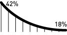
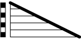
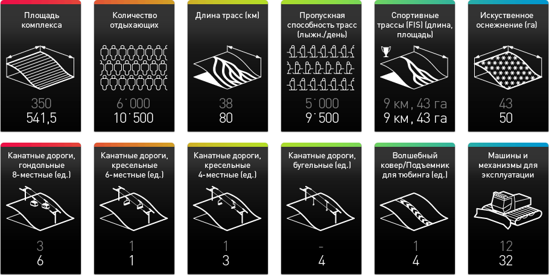
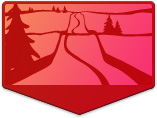
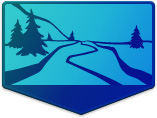

Компания по девелопменту горнолыжного курорта «Роза Хутор» была учреждена компанией «ИНТЕРРОС» в 2003 году для строительства и развития горнолыжного курорта «Роза Хутор» (в окрестностях посёлка Красная Поляна близ города Сочи). Данный проект предполагает создание уникального для России круглогодичного экокурорта, гармонично сочетающего возможности для занятий горнолыжным спортом и приморского отдыха. Строительство ГЛК «Роза Хутор» ведётся в соответствии с самыми современными международными стандартами и требованиями.
Создание массового горнолыжного курорта мирового класса, на трассах которого будет обеспечена возможность обучения и катания лыжников различного уровня мастерства, а также проведения любых спортивных соревнований, включая Олимпийские игры, мировые и европейские первенства по всем видам горнолыжного спорта.
Строительство современной системы искусственного оснежения трасс, позволяющей обеспечить продолжительность лыжного сезона от 140 до 180 дней в год, в зависимости от высоты пролегания трасс.
Создание необходимой инфраструктуры для комфортного приема и высококачественного обслуживания на курорте до 10 500 посетителей ежедневно.
Оснащение курорта самым современным оборудованием горнолыжной индустрии, в том числе высокоскоростными гондольными подъемниками, обеспечивающими доступ на вершину склона за 20 минут (перепад высот 1745 м).
Круглогодичное функционирование курорта, обеспечение широкого ассортимента зимних и летних спортивных программ и аттракционов.
Строительство трасс общей протяженностью около 80 км. Сертификация спортивных трасс Международной Федерацией горнолыжного спорта (FIS) для проведения международных соревнований.
Использование современных природоохранных технологий, позволяющих сохранить уникальную экологическую систему в районе плато Роза Хутор.
|
— Плато «Роза Хутор» — уникальное место для строительства горнолыжного курорта, как говорят эксперты, лучшее из еще не освоенных мест в мире. Поэтому «Интеррос» и взялся за этот проект с таким энтузиазмом. Грядущие олимпийские игры в Сочи добавляют значимости и ответственности нашей затее. С нетерпением жду того момента, когда на «Роза Хутор» можно будет кататься… Уверен, это место станет не только лучшим российским горнолыжным курортом, но и составит серьезную конкуренцию европейским.
Владимир Потанин Президент компании «Интеррос» |
О компании Наверх
- Менеджмент
- Партнеры
- Вакансии
Сергей Викторович Бачин
Генеральный директор Компании по девелопменту горнолыжного курорта «Роза Хутор»
Родился в 1963 году.
В 1987 году с отличием окончил физический факультет Московского государственного университета им. М. В. Ломоносова. По специальности физик.
Имеет степень «Мастера делового администрирования» Университета Хардфорд (США) по специальности «корпоративные финансы» и сертификаты CMA и CPA.
С 1998 года работает в системе ХК Интеррос: сначала в ОНЭКСИМ Банке (1998), после в компании «Интеррос Девелопмент» (1998–2003). С 2003 по ноябрь 2009 года — Генеральный директор девелоперской компании «Открытые инвестиции« (ОПИН).
С июня 2009 года по настоящее время — Генеральный директор компании по девелопменту горнолыжного курорта «Роза Хутор».
С сентября 2009 года — Председатель Попечительского Совета АНО «Павловская гимназия».
C июля 2010 года — Президент Закрытого акционерного общества «ПрофЭстейт».
Андрей Валерьевич Кобзаренко
Заместитель генерального директора по строительству — Директор Сочинского филиала
Родился в 1964 году.
Заместитель генерального директора по строительству — Директор Сочинского филиала.
Окончил Московский авиационный институт с отличием. До прихода в проект «Роза Хутор» работал в должности Генерального директора ООО «Павлово» группы компаний «ОПИН». Руководил строительством поселка класса De Luxe «Павлово-1», Павловской гимназии, инфраструктурного комплекса «Павлово Подворье» и элитного поселка смешанной застройки «Павлово-2» в Подмосковье.
До работы в группе «ОПИН» занимал руководящие должности в строительных компаниях, в течение двух лет руководил девелоперским проектом в группе компаний «Промсвязьнедвижимость».
Николай Николаевич Шленцов
Заместитель генерального директора — Исполнительный директор
Родился в 1977 году.
Заместитель генерального директора — Исполнительный директор.
Окончил Финансовую Академию при Правительстве РФ. До прихода в компанию «Роза Хутор» работал в Инвестиционно-девелоперской группе «ОПИН». Руководил строительством коттеджного поселка «Мартемьяново», осуществлял координацию реализации проектов деревянного каркасного домостроения, участвовал в строительстве Центра культуры, искусства и досуга им. А. И. Райкина, отеля категории «3 звезды плюс» Novotel Moscow Centre.
История проекта Наверх
| 2001 | 2002 | 2003 | 2004 | 2005 | 2006 | 2007 | 2008 | 2009 | 2010 | 2011 |
Январь 2001
Совместная инициатива Олимпийского комитета России и администрации Краснодарского края по развитию туристско-спортивного горноклиматического комплекса «Красная поляна» (ТСГКК) в городе Сочи поддержана Правительством Российской Федерации.
Месторасположение Наверх
ГЛК «Роза Хутор» строится в районе Красной Поляны, горноклиматического курорта, расположенного в 40 км от г. Сочи у подножия Главного Кавказского хребта.
Плато «Роза Хутор» охватывает примерно 1 820 га северного, северо-восточного и южного склонов хребта Аибга, поднимающихся от реки Мзымта вверх до вершины цепи в районе горы Каменный столб.
От международного аэропорта Адлер до курорта можно добраться по вновь реконструированной скоростной федеральной автомобильной дороге за 40 минут. После завершения строительства совмещенной автомобильной и железной дороги «Адлер-Альпика-Сервис» время в пути на скоростном поезде составит 25 минут.
Плато «Роза хутор»
Участок строительства горнолыжного курорта «Роза Хутор» составляет около 550 га на плато Роза Хутор и является наиболее привлекательным в Красной Поляне с точки зрения горнолыжного спорта.
На склонах плато Роза Хутор возможно строительство горнолыжных трасс, соответствующих требованиям Международной федерации лыжного спорта (FIS) для проведения всех видов олимпийских соревнований по горнолыжному спорту.
Характеристики горного участка
Ориентация склонов по сторонам света: север и северо-восток.
Градиенты склонов: диапазон от 18% до 42%, более крутые склоны преобладают на высоте свыше 1,5 км.
Спуск (вертикаль), подходящий для устройства лыжной трассы 1,466 км.
Открыть большую карту
|
— …Остановлюсь на абсолютной уникальности выбранного для строительства склона, который не только пригоден для создания трасс различной сложности, но и позволит проводить горнолыжные соревнования по десяти олимпийским дисциплинам с единой финишной зоной.
Бернард Русси Председатель исполкома Международной федерации лыжного спорта (FIS) |
Этапы развития Наверх
Развитие горнолыжной зоны будет осуществляться поэтапно. По завершению строительства курорт будет иметь 18 подъемников, горнолыжные трассы общей протяженностью около 80 км.
Трассы будут расположены на высоте от 575 до 2320 м над уровнем моря, общий перепад высот — 1745 м. Максимальная пропускная способность комплекса составит 10 500 чел/день, пропускная способность трасс — 9500 чел/день.
На первом этапе сооружено четыре канатные дороги и горнолыжные трассы длиной 38 км. Пропускная способность трасс составит — около 5000 лыжников в день.
Второй этап предполагает развитие восточных участков — устройство горнолыжных спусков и строительство канатных дорог близ урочища Обер-Хутор.
Третий этап — строительство подъемников и зон катания на южном склоне хребта Аибга. Максимальная пропускная способность комплекса по завершении данного этапа составит 10 500 чел/день, пропускная способность трасс — 9500 чел/день.
|
— Я приятно удивлен увиденным и впечатлен проделанной работой. Огромные изменения произошли на «Роза Хутор» с 2008 года, и мы уверены, что все строительные работы завершатся в срок.
Атле Скаардал Главный рейс-директор Кубка мира по горным лыжам среди женщин |
Основные характеристики курорта Наверх

X — первая очередь, X — всего по проекту
Трассы
Трассы курорта обеспечивают возможность катания лыжникам всех уровней мастерства.
Наиболее сложные «черные» трассы для мастеров расположены на высотах от 1350 м до вершины — 2320 м.

«Красные» трассы для катания лыжников среднего и продвинутого уровня расположены в средней части восточных склонов Плато «Роза Хутор» и обеспечивают катание на высотах от 940 м до 1350 м.

«Синие» трассы для детей и начинающих расположены вокруг Горного приюта на Плато «Роза Хутор».
|
— Впечатляющий объект! Поражает, что при таком масштабном проекте у его создателей есть четкое понимание как это строить. Видны реальные шаги по строительству! …Эксперты FIS работают в тесном сотрудничестве с представителями «Роза Хутор». Их рекомендации полностью учитываются при строительстве горнолыжных трасс, объектов сноуборда и фристайла.
Сара Льюис Генеральный секретарь Международной федерации лыжного спорта (FIS) |
Инфраструктура
Роза Долина
Расположена на высоте 560 м над уровнем моря. Здесь (высота — 560 м над уровнем моря) планируется разместить гостиницы, торговые площади, кафе, прокат лыж, кассы продажи билетов и лыжную школу. Кроме того, на территории Роза Долина располагаются инфраструктурные объекты — парковки, мастерские, трансформаторная станция и пр.
Роза Пик
Расположен на высоте 2327 м над уровнем моря — в непосредственной близости от канатной дороги «Кавказский Экспресс», здесь будет находиться Высокогорный комплекс с ресторанами и вертолетной площадкой.
Роза Приют
Роза Приют расположен на высоте 1166 м, здесь расположены рестораны, магазины, раздевалки, пункты проката и пункт первой помощи.
Роза Стадион
Расположен на высоте 940 м над уровнем моря около нижней станции канатной дороги «Волчья Скала». На территории Роза Стадион будут построены несколько ресторанов, сервисных зданий и гостиница.
| Поделиться: |
|


{kind=link}
{kind=link}
{kind=link}
{kind=link}